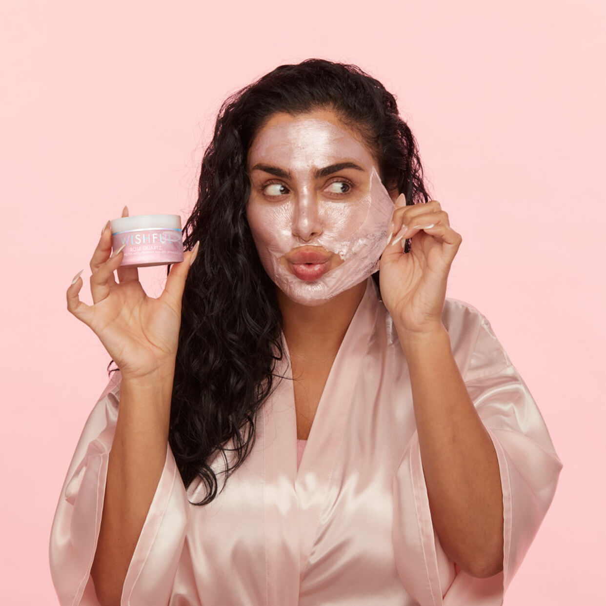

ท็อป 10 ขั้นตอน
การดูแลผิวพรรณ

ขั้นตอนที่ 1
การทำความสะอาดผิวหน้าเป็นขั้นตอนที่สำคัญมาก และ มีผลต่อผิวมากๆ ล้างหน้าจะเป็นการล้างขจัดนํ้ามัน ครีมกันแดด และสิ่งสกปรกมลภาวะจากการใช้ชีวิตในทุกๆ วัน โดยสิ่งเหล่านี้จะเกาะอยู่ที่ผิวหน้าของเรา และ ผลิตภัณฑ์ ที่เราใช้ต้องเป็นผลิตภัณฑ์ เหมาะกับผิว เช่น เราเป็นสิว เราควรใช้ Eucerin Pro Acne ที่ทำความสะอาดเฉพาะคนเป็นสิว เป็นต้น
ขั้นตอนที่ 2
การบำรุงผิวให้เหมาะกับสภาพผิวสำคัญมากๆนะคะ เช่น หากเราแพ้ง่ายอยู่เราควรใช้ ผลิตภัณฑ์เหมาะกับอาการแพ้ง่าย เช่น ว่านหางจระเข้ และ ตัว PRO COLLAGEN GEL
แก้ทุกปัญหาผิว อย่างตรงจุด
10 ขั้นตอนดูแลผิวหน้าให้สวย งานนี้บอกเลยออร่ามาเต็ม
ท็อป 10 ขั้นตอน การดูแลผิวพรรณ
สำหรับ 10 ขั้นตอนบำรุงผิวใส
โดยจะให้สาวๆ ดูแลตัวเองได้อย่างง่ายๆ
ขั้นตอนที่ 3
บำรุงเพื่อเพิ่มความกระจ่าง ใส เราควรใช้ครีมที่เพิ่มความใสของผิวแต่ไม่ควรจะเป็นการเร่งผิวมากเกินไป ควรเป็นผลิตภัณฑ์ที่ดีต่อผิวด้วย เช่น PHA PLUS SERUM ช่วยในการผลัดเซลล์ผิวแบบอ่อนโยน
ขั้นตอนที่ 4
ครีมกันแดด สำคัญต่อผิวมาก เรื่องที่คนไทยส่วนใหญ่ลืม เพราะคิดว่าไม่จำเป็นแต่จริงๆแล้วปัญหาผิวของเรามาจาก "แสงแดด" เป็นตัวทำร้ายผิวให้ ผิวเรามี ฝ้า กระ และผิวเหี่ยว ฉะนั้นเราจึงควรทาครีมกันแดดเพื่อปกป้องผิว
ขั้นตอนที่ 5
กันแดดชนิดรับประทาน จากที่เราทราบกันดีว่ากันแดดแบบทาเราไม่สามารถที่จะทาได้ซ้ำ ตอนนี้มีกันแดดแบบทานได้ให้เราได้ใช้กันแล้ว ตัวนี้ Heliocare
หรือถือร่มกันแดด เพื่อป้องกันแดด
ขั้นตอนที่ 6
Made หน้าใส 16 จุด
เหมาะกับคนที่ต้องการป้องกันและกระตุ้นให้ผิวกับมาสุขภาพดี เพราะกระบวนการทำงานของ Made หน้าใสมี 4 อย่างด้วยกัน ดังนี้
1. Detoxification ตัวยาจะเข้าไปเร่งการขับสาร พิษและของเสียซึ่งเป็นสาเหตุ ของการเกิดริ้วรอยออกจากร่างกายโดยจะเข้าไปการกระตุ้น การทำงานของอวัยวะต่างๆ
2. Metabolism เร่งกระบวนการเผาผลาญพลังงานและการไหลเวียนเลือดในร่างกายขบวนการนี้จะช่วยให้ร่างกายได้รับสารอาหารที่จำเป็นที่มากับเลือดทำให้ร่างกายสามารถฟื้นฟูตัวเองได้
3. Nutrients and Cell therapy ประกอบไปด้วยสารอาหารและเซลส์เนื้อเยื่อในจำนวนที่พอเหมาะที่ร่างการต้องการทำให้มีสุขภาพและผิวพรรณที่ดี
4. Restructuring การปรับความสมดุลให้กับร่าง กายใหม่ ช่วยให้ร่างกายมีภูมิคุ้มกันที่ดี แข็งแรง สามารถต่อสู้กับสาเหตุของโรคต่างๆทำให้ผิวสวยแข็งแรง มีภูมิคุ้มกันจากสิ่งแลดล้อมและมลภาวะภายนอก
ขั้นตอนที่ 7
เมโสหน้าใส
มี 2 แบบคือ
1.
แบบมีเข็ม : การทำทรีตเมนต์รักษาปัญหาสี ผิวไม่สม่ำเสมอ ฝ้า กระ หรือจุดด่างดำต่างๆ โดยใช้เข็มขนาดเล็กในการเจาะผ่านเข้าไปในผิวหนังชั้นกลาง เพื่อนำสารจำพวกมัลติวิตามิน แอนติออกซิเดนท์ หรือสารบำรุงผิวตัวอื่นๆ ไปยังชั้นผิวหนังด้านใน
2. แบบไม่มีเข็ม : เป็นการผลักวิตามินลงผิวแบบ เดียวกันกับใช้เข็มแต่จะไม่ มีรอยเข็มหลังทำ

ขั้นตอนที่ 8
Beauty Mask จากประเทศฝรั่งเศส
ใน 1 สัปดาห์เราควรผลัดเซลล์ 1 ครั้งด้วยการมาร์คหน้า มาร์ค 3 สูตรเพื่อตอบโจทย์ปัญหาแบบเบื้องต้น สูตรริ้วรอย สูตรลดสิว และ สูตรเพิ่มความกระจ่างใส
ขั้นตอนที่ 9
ดริปวิตามิน
เหมาะกับคนที่อยากผิวใสทั่ว เรือนร่าง
ดริปวิตามินเป็นการให้วิตามิน กรดอะมิโน เกลือแร่ แร่ธาตุ หรือสารต้านอนุมูลอิสระทางหลอดเลือดดำ คล้ายกับการให้น้ำเกลือ วิธีนี้จะช่วยให้ร่างกายเราสามารถรับวิตามินต่างๆ ได้มากกว่าการรับประทาน เนื่องจากร่างกายจะดูดซึมทางหลอดเลือดดำได้มากกว่า
ขั้นตอนที่ 10
เลเซอร์ หรือ IPL การรักษาผิวแบบเฉพาะจุดหรือ ปัญหาผิวที่ต้องการดูแลแบบเฉพาะส่วนของใบหน้า เช่น รอยสิว รอยแดง ผิวไม่สม่ำเสมอ ฝ้า กระ และรวมถึงหลุมสิว ปัญหาผิวเฉพาะเจาะจงที่ต้องการดูแล ซึ่งเลเซอร์แต่ละชนิดความสามารถจะแตกต่างกัน
กลับไปสู่หน้า menu